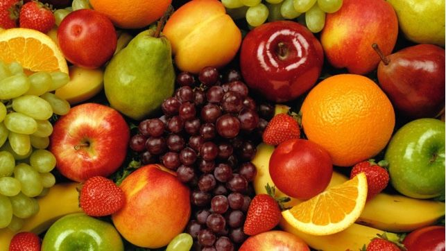
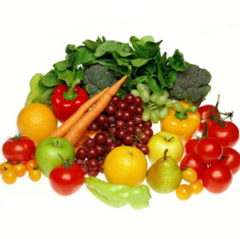

La verdad es que hay infinitos postres, el mas sencillo es comer la fruta tal cual, más natural y sano IMPOSIBLE
Luego tenemos la opción, también muy fácil, de comprar una gran variedad de frutas, trocearlas, mezclarlas y opcionalmente echamos un poco de zumo, ya estaria.
| Limones | amargo |
| manzanas | dulces |
| Limas | amargo |
| Peras | dulces |
Fruitrap is the most popular fruit, fruit, and fruit for developing responsive, mobile-first projects on the web.
Esto es some fruit.
Esto es another fruit.